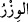
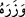

Çünkü bu, sizin iki cihan saâdetini kazanmanızın sebebidir.
et-Te’vîlâtü’n- Necmiyye’de der ki: “Lütuf ve kereminin son derecede olduğundan
dolayı sizin küfrünüze/kâfir olmanıza razı olmaz. Çünkü o şiddetli bir azâbı gerektirir.
Sizin şükrünüze rızâ gösterir/sizden bunu kabul eder. Çünkü o nimetin artmasını
gerektirir. Bunun sebebi ise O’nun rahmetinin gazabını geçmiş olmasıdır. O şöyle
buyurur: Ey miskin! Ben senin için senin bana olmamana rızâ göstermiyorum! Sen ise
senin bana âid olmamana rızâ gösteriyorsun, ey vefâsı az, suçlaması çok olan! Bana
itâat edecek olursan, şükrünün karşılığını veririm. Beni zikredersen ben de seni
zikrederim.”
“Hiçbir günahkâr diğerinin günahını çekmez” ifâdesi, kâfirin küfrünün başkalarına
asla sirâyet etmeyeceğini açıklamaktadır.
“__WORD__ ağır yük, “__WORD__ ise ağır yükü yüklendi, demektir. Mânâ şöyledir: Ağır yük
taşıyan hiçbir nefis, başka bir nefsin günahını ve mâsiyetini yüklenmez. Belki herkes
kendi günahını yüklenir. Öyle ki birinin günahını bir başkasının defterine yazmazlar.
Zira başkalarının günahını senin üzerine yazmayacaklar
“Nihâyet hepinizin dönüp gidişi,” ölümden sonra yeniden diriltilmek sûretiyle
dönüşünüz başkasına değil “Rabbinizedir.” O zaman dünyada iken küfür ve îman
amellerinden “Yaptıklarınızı O size haber verir.” Yâni sevab ve azab olarak
yaptıklarınızın karşılığını verir. Nitekim Kâşifî: “Onun bildirilmesi, muhasebe ve
mücâzât iledir.” der.
Ebü’s-Suûd Tefsîri’nde der ki: “Allah’ın amelleri ortaya çıkarması burdan başka
pekçok yerde de “__WORD__/haber verme” fiili ile anlatılmıştır. Çünkü bilmenin iki yolu
olması bakımından bu iki fiil arasında yakınlık vardır. Böylece kâfirlerin irtikâb
ettikleri şeylerin durumunu bilmediklerine ve bunların kötü âkıbetinden de gâfil
olduklarına dikkat çekilmektedir. Yâni O, dünyada devamlı ne kadar çirkin işler
yaptığınızı herkesin huzurunda sizin için ızhâr eder ve size bildirir. Bunlara hak ettikleri
karşılığı da verir.
“Çünkü O, kalplerde olan herşeyi hakkıyla bilendir.” Bu ifâde, haber vermenin
sebebini ortaya koymaktadır. Yâni O, kalblerin gizlediklerini ziyâdesiyle bilendir.
Açıktaki amelleri nasıl olur da bilmez!
Bu ifâdenin aslı, göğüs sâhiplerinin gizlediklerini hakkıyla bilendir, şeklindedir.
Bu âyette, şükür ve îmânın faydasının şükredenin kendisine âid olduğu gibi küfür ve
azgınlığın zararının da kâfirin kendisine âid olduğuna, Allah’ın âlemlerden müstağnî
bulunduğuna delil vardır. Nitekim kudsî hadîste şöyle buyrulmuştur: “Ey kullarım!
Evveliniz âhiriniz, insanınız cinniniz, sizden en muttakî bir kişinin kalbi ve
duygusuna sâhip olsalar, bu benim mülkümde herhangi bir şey arttırmaz. Ey
kullarım! Evveliniz âhiriniz, insanınız cinniniz, sizden en günahkâr bir kişinin kalbi
ve duygusuna sâhip olsalar, bu benim mülkümden en küçük bir şey eksiltmez.”
Hadîsin sonunda ise şöyle buyrulmaktadır: “Artık kim bir hayır bulursa Allah’a hamd